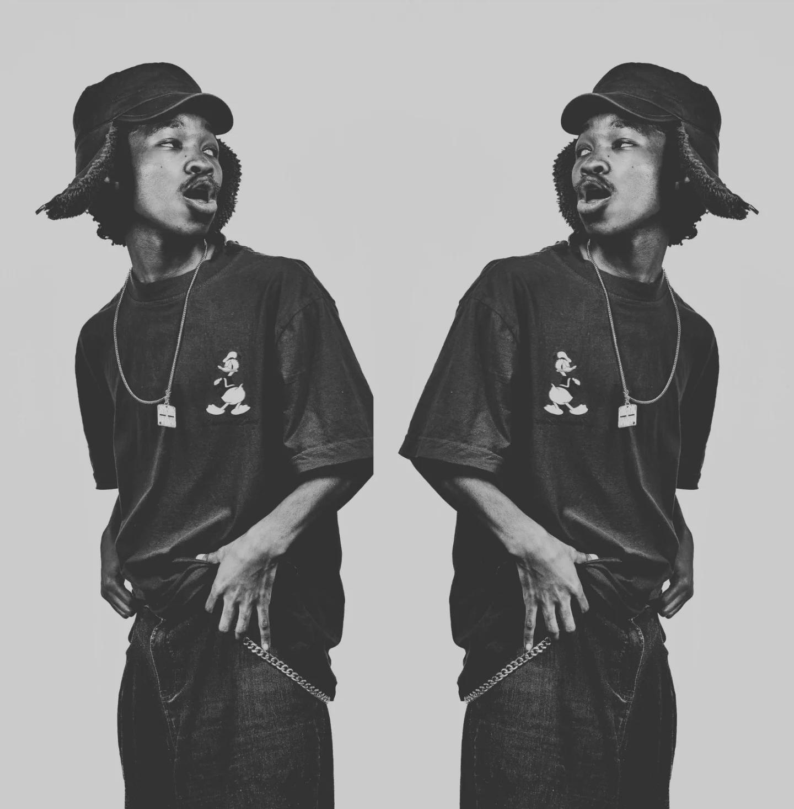

When we first encountered Toby, he was a young artist full of potential, today he has proven true a lot of what we initially believed and there is a lot more to come…
The West-Rand native and self-prophesied "custodian of Hip-Hop" raps with intent and architecture over smooth jazzy beats which allow him and his collaborators to be heard in a coherent and vibey manner; Run Away is a perfect example of this.

Photography: Lost Footage Films (@lf.films_)As much as I'm Dealing With Problems is a feat few others are able to produce, its title is reflective of what is really going on. Behind beautiful piano keys, smooth lyrics and holistic sonics, it is a piece on Toby's personal experiences and relationships. In 29 minutes, he wades through the waters of grief, the fading of loved ones, his loss of innocence and the overall price that is paid as sacrifice as a result of life being lived. It is a bold choice for a debut album — don't expect it to put you in the club — tracks like Minds on a Thread will more likely leave you in deeper thought about the more delicate fabrics of your melancholy.
He calls it a collection of some of the singles that he recorded. Wus Good and Run Away, respectively released in 2025 and 2024, are examples of such. This goes on to reveal that the theme is a reflection of what he has been experiencing for a while, and the album is a release meant to heal, process it all and catapult him into new adventures; and he is more than deserving. Toby considers it to be his most ambitious project to date, crediting an ability to anthropomorphise his conscious into reimagining a more vivid world with descriptive narrations and explorative tools.
The production can be described as simple with a lot of moving parts. For large spans it feels stripped, with the central component being the vocals: what they say and mean — but one would be amiss to not find guitar riffs, piano keys and some boom-baps that give life across the 9 tracks. These components don't compete, but complement each other. They are structured in a manner that serves those who will enjoy the digital recording for what it is worth, as well as those who will catch a live performance; the instrumentation allowing improvisation and extended solo sequences. This is the manner in which Toby is most comfortable — a human being with his words, supported by music. If you can understand his music, you can understand him a bit better…but never fully.
The album offers a plethora of complimentary acts. You can find the likes of The Rabbi Himself, DIMAL and Ziroh, on productions from KozyAM and Prince Luwi. The collaborators were chosen not only because of their talents but also because they uniquely contribute to the listener's understanding of who Toby From 59th actually is. Toby returns the favour in platforming people that we also feel are worth your time. Expect more from all the people that come from this project.
For a debut album, this says a lot about who Toby is; a hip-hop artist curating his experiences for himself and anyone else willing to listen. It's not an album made to cater for bangers and no substance. Since being released in May 2025, it has organically grown, gaining thousands of listeners. This is proof that an audience exists for Toby and his type of music. We are part of that ever-growing group, and we cannot wait to see him consistently develop. Go and listen to the album!
I'm Dealing With Problems
- U-Phoria
- Wus Gud
- Glow Up (ft. Hanna)
- Run Away (ft. Zero AM)
- Jojo's Intermission
- Can't Buy
- Minds On A Thread (ft. Zero AM)
- In Loving Memory (ft. The Rabbi Himself)
- Parables (ft. DIMAL, Prince Luwi)